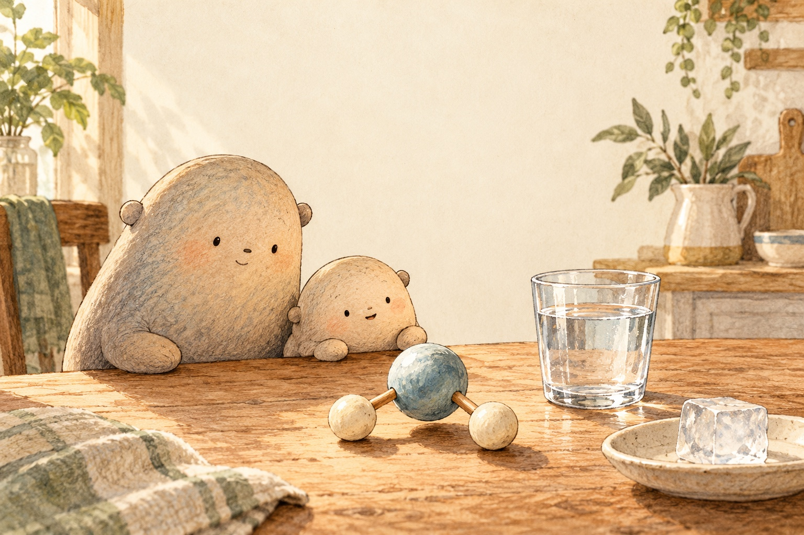

01What does H2O mean?

Look closer. Find the small three-part model beside the glass: two matching pieces and one larger piece.
A little explanation. Water is made of tiny pieces called molecules. Each water molecule is H2O: two hydrogen atoms joined to one oxygen atom. Atoms are even smaller pieces that can join to make molecules.
Try this. Put one ice cube on a plate and start a timer. Use only cool water, keep a towel nearby, and wipe up every spill. Watch until the ice melts.